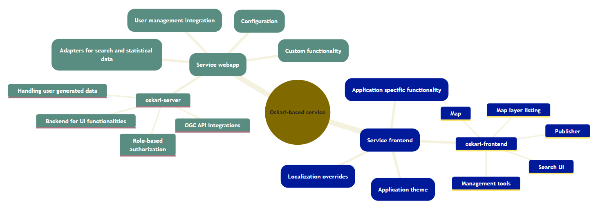
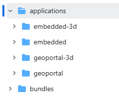
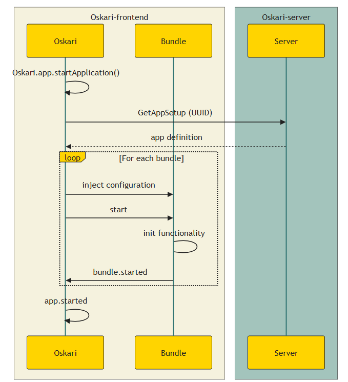
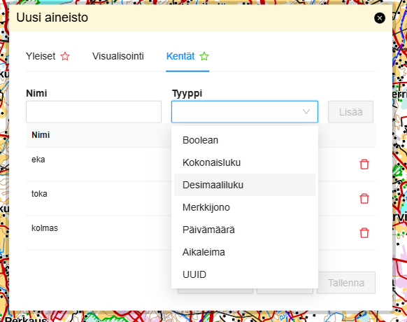

Oskari 2026
Sami Mäkinen - Maanmittauslaitos
Lyhyt historia
- Syntynyt Paikkatietoikkunasta
- Avointa lähdekoodia
- ???
- `$` / `£` / `€`
Avointa lähdekoodia
GitHub.com/oskariorg
- sample-application
- oskari-frontend
- oskari-frontend-contrib
- sample-server-extension
- oskari-server
Oskari-pohjaisen palvelun rakenne

Palvelukohtainen frontend-sovelluspaketointi

== mitä pakataan mukaan (koodit -> kielistykset)
### Frontend - `sovellus` / main.js
Jossa sovellus esim. `geoportal` tai `embedded`.
```javascript
import 'oskari-bundle!oskari-frontend/bundles/mapping/mapmodule/map2d_ol';
import 'oskari-bundle!oskari-frontend/bundles/framework/layerlist';
import 'oskari-bundle!../../bundles/sample-info';
```
- `oskari.min.js`
- `oskari_lang_[kielikoodi].js`
Frontend - sivun lataus

Input
Output
- mikä sovellus
- mikä sivupohja
- bundlet (config + state)
## Frontend - 2026
- Webpack `loader`
- bundle "rekisteröinti" toteutuksen rinnalla
- aiemmin `packages` alla
- kielistykset `./resources/locale/*.js`
- bundle-rekisteröinti
- `bundle id` -> mitä tehdään kun bundle käynnistetään
### Frontend - bundle
#### index.js
```javascript
import { MyBundleInstance } from './instance';
Oskari.bundle('hello-world', () => new MyBundleInstance());
```
#### instance.js
```javascript
import { BasicBundleInstance } from 'oskari-ui/BasicBundleInstance';
class MyBundleInstance extends BasicBundleInstance {
start (sandbox) {
super(sandbox);
console.log('Hello world')
}
}
```
### Frontend - perusteet
#### eventin kuuntelu
```javascript
this.on('MapClickedEvent', (evt) => console.log(evt));
```
#### kielistyksen käyttö
```javascript
const teksti = this.loc('kielistys.avain');
const paramsTeksti = this.loc('kielistys.parametroitu', {
foo: 'bar'
});
```
### Tulossa
- React migraation jatkaminen
- toolbar
- päänavigaatio
- Käyttäjän aineistojen yhdistäminen {`myfeatures`}
- omat paikat {`myplaces`}
- omat aineistot {`userlayer`}
- (Tason tietojen lataus)
Tason ominaisuuksien määrittely

# Kiitos!
- https://oskari.org
- https://github.com/oskariorg
- Oskari-user@lists.osgeo.org
- https://gitter.im/oskariorg/chat